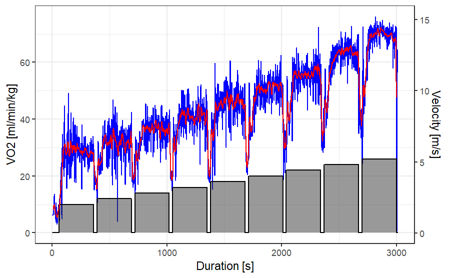

Overview
The goal of spiro is to enable a fast and standardised workflow with raw data files from cardiopulmonary exercise testing. The package provides simple tools for data import, processing, summary and visualisation.
Installation
Install the current development version from GitHub:
# install.packages("devtools")
devtools::install_github("smnnlt/spiro")Usage
- Use
spiro()for one-step data import and processing from raw metabolic cart files. - Use
spiro_summary()andspiro_glance()for getting a stepwise or overall summary of the imported data. - Use
spiro_plot_*()as a shortcut for visualising the imported data.
Example
library(spiro)
# get data for example
file <- spiro_example("zan_gxt")
gxt_data <- spiro(file)
spiro_summary(gxt_data)
#> for pre-measures, interval was set to length of measures
#> step_number load VE VO2 VCO2 RER VO2_rel RE CHO FO
#> 1 0 0.0 13.03 500.19 411.74 0.82 7.58 NA 0.27 0.15
#> 2 1 2.0 39.87 1860.92 1585.75 0.85 28.20 234.97 1.27 0.46
#> 3 2 2.4 44.63 2097.82 1805.27 0.86 31.79 220.73 1.51 0.49
#> 4 3 2.8 52.63 2413.01 2122.17 0.88 36.56 217.62 1.95 0.48
#> 5 4 3.2 57.19 2710.68 2319.93 0.86 41.07 213.91 1.89 0.65
#> 6 5 3.6 67.45 3048.75 2684.87 0.88 46.19 213.86 2.47 0.60
#> 7 6 4.0 75.91 3404.02 3026.70 0.89 51.58 214.90 2.90 0.62
#> 8 7 4.4 88.36 3724.37 3383.64 0.91 56.43 213.75 3.50 0.56
#> 9 8 4.8 106.44 4223.82 3993.55 0.95 64.00 222.21 4.68 0.37
#> 10 9 5.2 127.54 4573.91 4488.36 0.98 69.30 222.12 5.82 0.12
spiro_plot_VO2(gxt_data)